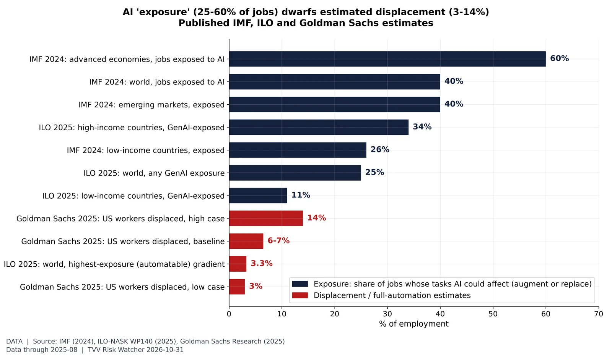
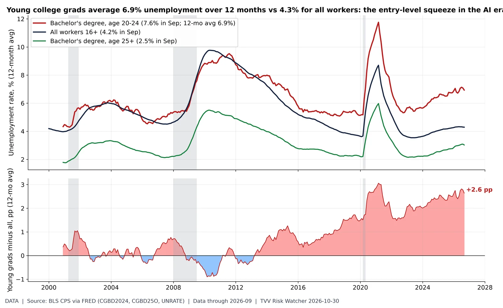
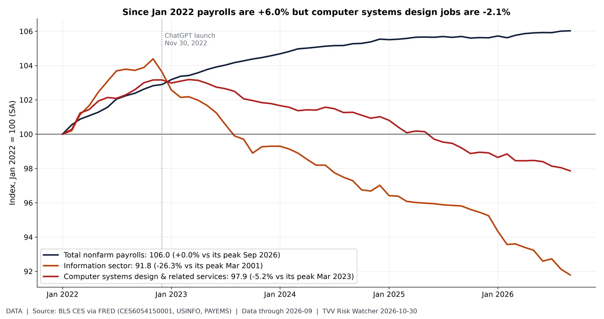
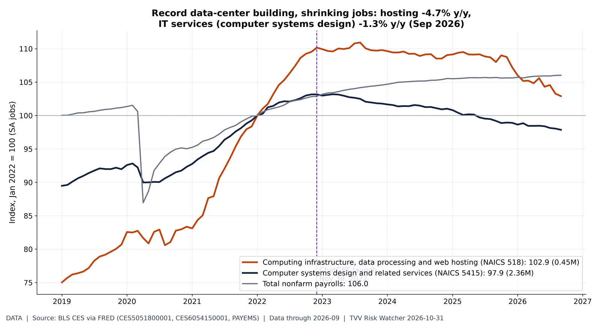
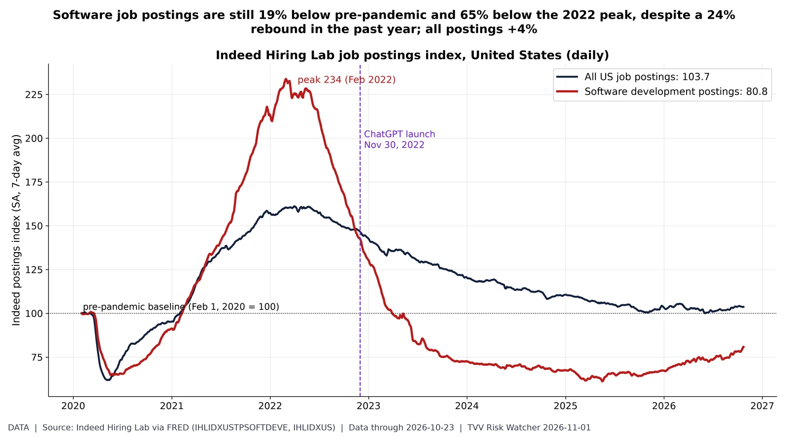
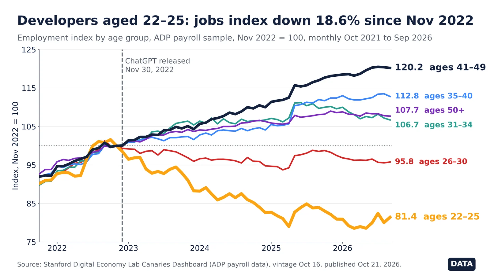

Displacement Risk
Where AI is expected to touch work, and where early pressure shows up: published exposure estimates, entry-level graduates, tech-services jobs and software job postings.

Source: https://www.imf.org/en/Blogs/Articles/2024/01/14/ai-will-transform-the-global-economy-lets-make-sure-it-benefits-humanity https://www.ilo.org/resource/news/one-four-jobs-risk-being-transformed-genai-new-ilo%E2%80%93nask-global-index-shows https://www.ilo.org/sites/default/files/2025-05/WP140_web.pdf https://www.goldmansachs.com/insights/articles/how-will-ai-affect-the-global-workforce

Source: https://fred.stlouisfed.org/series/CGBD2024 https://fred.stlouisfed.org/series/CGBD25O https://fred.stlouisfed.org/series/UNRATE https://www.bls.gov/cps/

Source: https://fred.stlouisfed.org/series/CES6054150001 https://fred.stlouisfed.org/series/USINFO https://fred.stlouisfed.org/series/PAYEMS https://www.bls.gov/ces/

Source: https://fred.stlouisfed.org/series/CES5051800001 https://fred.stlouisfed.org/series/CES6054150001 https://fred.stlouisfed.org/series/PAYEMS

Source: https://fred.stlouisfed.org/series/IHLIDXUSTPSOFTDEVE https://fred.stlouisfed.org/series/IHLIDXUS https://data.indeed.com/

Source: https://digitaleconomy.stanford.edu/project/indicators/canaries-dashboard/ https://storage.googleapis.com/aviary-del-public/release_memos/latest/downloads/canaries_software_developers_results.zip https://storage.googleapis.com/aviary-del-public/release_memos/latest/downloads/canaries_by_age_results.zip https://digitaleconomy.stanford.edu/app/uploads/2026/08/Canaries_August2026.pdf https://budgetlab.yale.edu/research/evaluating-impact-ai-labor-market-current-state-affairs https://x.com/randgroup/status/2120088546350428535
Rand’s headline says “1 in 5 junior dev jobs gone since ChatGPT.” Stanford says the dashboard shows correlation, not a causal link, and that earlier declines are likely non-AI. The fixed firm panel leaves out new firms, and the index tracks fewer young hires, not jobs destroyed. All six age series also jump together in May 2025, which may be a sample effect.
Rebuttal: Yale Budget Lab: Evaluating the impact of AI on the labor market